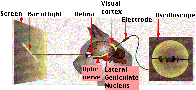

Neural networks
Software interpolation of images
Created by Andrey Dvorko / @Happymilk
Interpolation
It is a method of constructing new data points within the range of a discrete set of known data points.
Quick example
| x | f(x) |
|---|---|
| 0 | 0 |
| 1 | 0.8415 |
| 2 | 0.9093 |
| 3 | 0.1411 |
| 4 | -0.7568 |
| 5 | -0.9589 |
| 6 | -0.2794 |
Quick example
Piecewise constant interpolation
Linear interpolation
Spline interpolation
Multivariate interpolation

- Nearest-neighbor interpolation
- Barnes interpolation
- Bilinear interpolation
- Bicubic interpolation
- Bézier surface
- Lanczos resampling
- Delaunay triangulation
- Inverse distance weighting
- Kriging
- Natural neighbor interpolation
- Spline interpolation
- Trilinear interpolation
- Tricubic interpolation
Multivariate interpolation
Result?
Source
Result?
Result?
Result?
Source
Result?
Result?
Neural networks
It ts a computational approach used in computer science and other research disciplines, which is based on a large collection of neural units (artificial neurons), loosely mimicking the way a biological brain solves problems with large clusters of biological neurons connected by axons.
Cool story
üêà
üë• üêà
Cat experiment
David Hubel , Torsten Wiesel
Cat experiment
Cat experiment
17 Sep 2014

Network in network
“In this paper, we will focus on an efficient deep neural network architecture for computer vision, codenamed Inception, which derives its name from the Network in network paper by Lin et al in conjunction with the famous ‚Äúwe need to go deeper‚Äù internet meme.”
CCCP

THE END